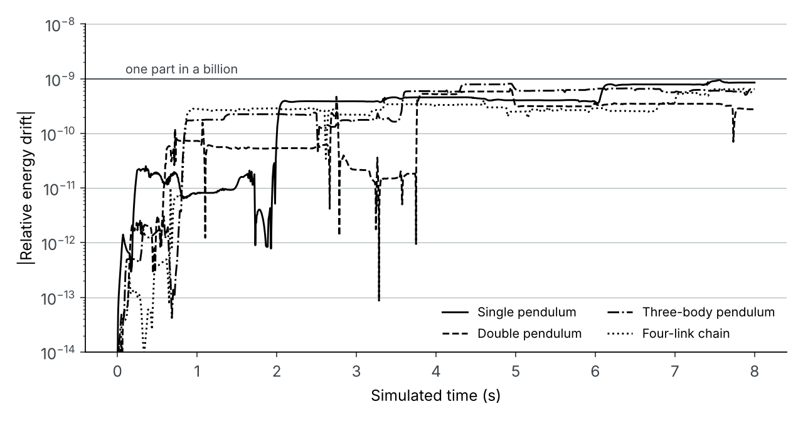

What it does
I wanted to understand how simulation packages like SolidWorks Motion work underneath, so I wrote my own 2D multibody dynamics engine in MATLAB. You describe a mechanism as rigid bodies and joints; the code assembles its equations of motion, integrates them and animates the result, with an optional MP4 export.
How it works
Each body has three coordinates (x, y and rotation) and a mass matrix. Joints are written as constraint equations: revolute joints pin two bodies together, prismatic joints let a body slide along an axis, and loop-closure joints close a chain back on itself, which is what four-bar and crank-slider linkages need. The engine stacks the mass matrix and constraint Jacobian into one system and solves it for accelerations and constraint forces at every step.
Solving for accelerations alone lets the joints slowly drift apart, so I used Baumgarte stabilisation (α = β = 20), which pulls the constraints back to zero. The equations are integrated with MATLAB’s ode113 at tight tolerances (relative 10−10, absolute 10−12).
Validation
A pendulum with no friction should keep its total energy forever, so energy drift is a direct measure of how accurate the solver is. I ran four test cases for 8 simulated seconds each: a single pendulum, a double pendulum, a three-body pendulum and a four-link chain. In every case, energy drifted by less than one part in a billion (worst case 9.5 × 10−10), and the joints stayed together to within about 3 × 10−11.

Gravity and collisions
I then added a second mode for bodies attracting each other under gravity, using the same integrator. It detects collisions with an ode113 event function that stops the run when two bodies touch, and I used it for two-planet collisions, orbits that decay into a collision, and a chaotic three-body system.
What I learned
Writing the solver myself made the theory concrete: why constraint drift happens and how stabilisation fixes it, why stiff tolerances matter for energy conservation, and how a loop-closure joint turns an open chain into a linkage. Next I would like to add friction, springs and dampers, and validate a four-bar linkage against a SolidWorks motion study.